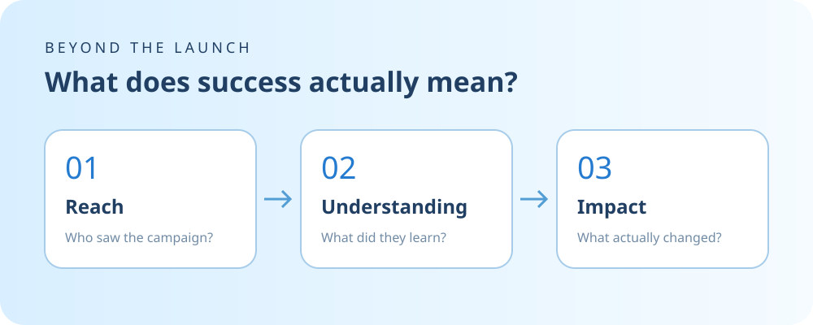

МОЙ КАБИНЕТ · АНГЛИЙСКИЙ ЯЗЫК
Hello! Let’s learn.
Pharma · C1 · Уроки 1–3
Как к Вам обращаться?
УРОК 3 · C1
Can AI Help Doctors Spot Cancer?
Реальное шведское исследование о том, как ИИ помогает врачам читать снимки.
УРОК 2 · C1
From feedback to strategy
Как оценивать обратную связь, выбирать приоритеты и защищать решение.

В этом разделе пока нет работ.